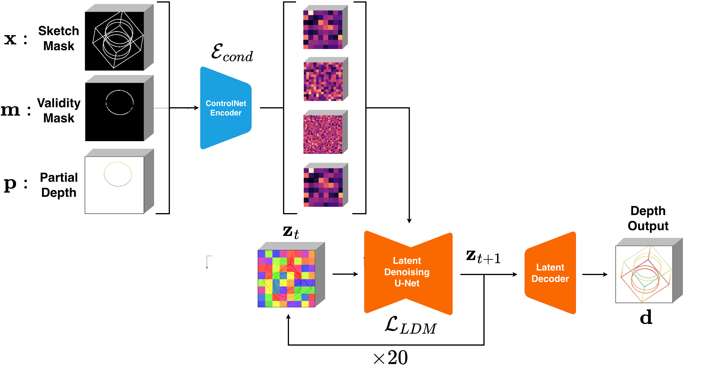

Qualitative Results
Browse 10 approved samples. Each sample includes input sketch, predicted depth, orbit GIF, and an interactive 3D viewer.
Input Sketch
Predicted Depth
Wireframe Orbit
Interactive 3D
The conversion of 2D freehand sketches into 3D models remains a pivotal challenge in computer vision, bridging the gap between human creativity and digital fabrication. Traditional line drawing reconstruction relies on brittle symbolic logic, while modern approaches are constrained by rigid parametric modeling, limiting users to predefined CAD primitives. We propose a generative approach by framing reconstruction as a conditional dense depth estimation task. To achieve this, we implement a Latent Diffusion Model (LDM) with a ControlNet-style conditioning framework to resolve the inherent ambiguities of orthographic projections. To support an iterative “sketch-reconstruct-sketch” workflow, we introduce a graph-based BFS masking strategy to simulate partial depth cues. We train and evaluate our approach using a massive dataset of over one million image-depth pairs derived from the ABC Dataset. Our framework demonstrates robust performance across varying shape complexities, providing a scalable pipeline for converting sparse 2D line drawings into dense 3D representations, effectively allowing users to “draw in 3D” without the rigid constraints of traditional CAD.
Our model’s diffusion architecture involves passing the geometric conditions (x, p, and m) into our conditioning encoder, outputting representations at various resolutions. These representations are then injected via zero-convolutions into the LDM, which predicts the Gaussian noise added to the latent space depth maps.

Browse 10 approved samples. Each sample includes input sketch, predicted depth, orbit GIF, and an interactive 3D viewer.
Input Sketch
Predicted Depth
Wireframe Orbit
Interactive 3D
@misc{cao2026reconstruction3dwireframesingle,
title={Reconstruction of a 3D wireframe from a single line drawing via generative depth estimation},
author={Elton Cao and Hod Lipson},
year={2026},
eprint={2604.13549},
archivePrefix={arXiv},
primaryClass={cs.CV},
url={https://arxiv.org/abs/2604.13549},
}